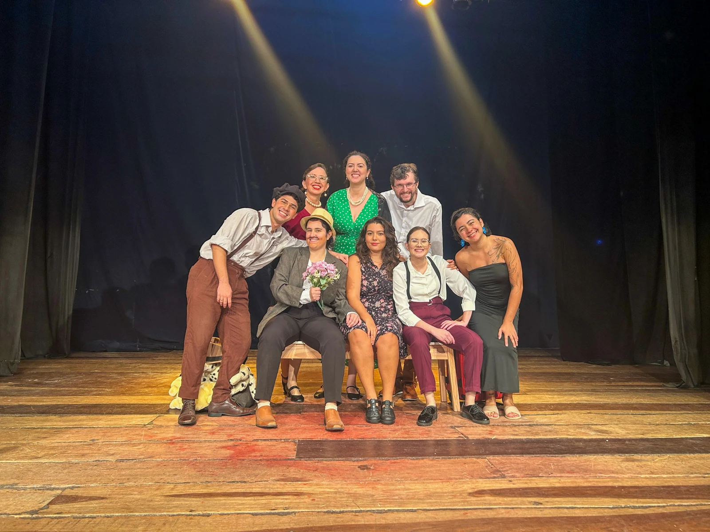

← Back to work
THEATRE · 2023–2024
A Capital Federal
Eusébio & Benvinda

ABOUT THE WORK
A Capital Federal is a theatre production collectively developed from the original work of the same name, in which I played the roles of Eusébio and Benvinda. The available recording is from the 2023 performance.